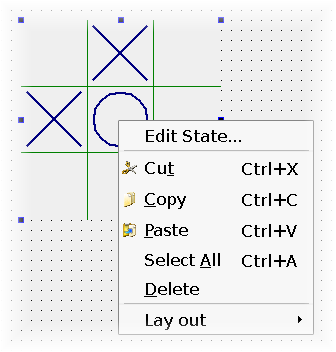

| Home · All Classes · Modules · QSS HELP · QSS 案例 · VER007 HOME |
该QDesignerTaskMenuExtension类允许您自定义菜单项添加到Qt Designer中的任务菜单。More...
通过继承QPyDesignerTaskMenuExtension。
该QDesignerTaskMenuExtension类允许您自定义菜单项添加到Qt Designer中的任务菜单。
QDesignerTaskMenuExtension提供了用于创建自定义任务菜单扩展的接口。它通常用于创建特定于一个插件中任务的菜单项Qt Designer。
Qt Designer使用QDesignerTaskMenuExtension养活它的任务菜单。当被要求的任务菜单，Qt Designer将查询所选部件的任务菜单扩展。

任务菜单扩展是QActions的集合。当选择该插件具有指定扩展名的动作出现在任务菜单中的条目。上图显示自定义Edit State...这似乎除了动作Qt Designer的默认任务菜单项：Cut，Copy，Paste等等
要创建一个自定义任务菜单扩展，你的扩展类必须继承自两个QObject和QDesignerTaskMenuExtension 。例如：
class MyTaskMenuExtension : public QObject, public QDesignerTaskMenuExtension { Q_OBJECT Q_INTERFACES(QDesignerTaskMenuExtension) public: MyTaskMenuExtension(MyCustomWidget *widget, QObject *parent); QAction *preferredEditAction() const; QList<QAction *> taskActions() const; private slots: void mySlot(); private: MyCustomWidget *widget; QAction *myAction; };
由于我们正在实现一个接口，我们必须确保它是使用由已知的元对象系统的Q_INTERFACES（）宏。这使Qt Designer使用qobject_cast（ ）函数用什么来查询所支持的接口，但一QObject指针。
你必须重新实现taskActions（ ）函数返回的行动，将被列入名单Qt Designer任务菜单。或者，您可以重新实现preferredEditAction（ ）函数选择你的插件，并按下时设置被调用的行动F2。优选的编辑动作一定要返回的动作之一taskActions（ ），并且如果它没有被定义时，按F2键将简单地被忽略。
In Qt Designer，则不会创建扩展，直到你需要它们。任务菜单扩展名，例如，当您单击鼠标右键，在一个小部件创建Qt Designer的工作空间。出于这个原因，你还必须构建一个扩展的工厂，无论是使用QExtensionFactory或者一个子类，并用它注册Qt Designer的extension manager。
当一个任务菜单扩展是必需的，Qt Designer的extension manager将通过其所有已注册的工厂运行要求QExtensionFactory.createExtension（）对每个直到找到一个能够创建一个任务菜单扩展所选部件。这家工厂将使这个扩展的实例。
有扩展的四个可用的类型Qt Designer：QDesignerContainerExtension，QDesignerMemberSheetExtension，QDesignerPropertySheetExtension和QDesignerTaskMenuExtension 。Qt Designer的行为是相同的同一个容器中，构件表，属性表或任务菜单所需的分机是否相关联。
该QExtensionFactory类提供了一个标准的扩展工厂，并且也可以用作用于定义扩展工厂的接口。您可以创建一个新的QExtensionFactory并重新实现QExtensionFactory.createExtension（）函数。例如：
QObject *ANewExtensionFactory.createExtension(QObject *object, const QString &iid, QObject *parent) const { if (iid != Q_TYPEID(QDesignerTaskMenuExtension)) return 0; if (MyCustomWidget *widget = qobject_cast<MyCustomWidget*>(object)) return new MyTaskMenuExtension(widget, parent); return 0; }
或者您可以使用现有的工厂，扩大QExtensionFactory.createExtension（ ）函数，使工厂能够创建一个任务菜单扩展为好。例如：
QObject *AGeneralExtensionFactory.createExtension(QObject *object, const QString &iid, QObject *parent) const { MyCustomWidget *widget = qobject_cast<MyCustomWidget*>(object); if (widget && (iid == Q_TYPEID(QDesignerContainerExtension))) { return new MyContainerExtension(widget, parent); } else if (widget && (iid == Q_TYPEID(QDesignerTaskMenuExtension))) { return new MyTaskMenuExtension(widget, parent); } else { return 0; } }
对于使用QDesignerTaskMenuExtension类的完整示例，请参见Task Menu Extension example。该示例显示了如何创建一个自定义的widget插件Qt Designer，以及如何使用QDesignerTaskMenuExtension类的自定义项添加到Qt Designer的任务菜单。
返回具有指定扩展名选择一个插件并按下时调用的动作F2。
动作一定要返回的动作之一taskActions（ ） 。
这种方法是抽象的，应在任何子类中重新实现。
返回任务菜单扩展为一个动作列表将包含在Qt Designer的任务菜单当选择具有指定扩展名的插件。
此功能必须重新实现将动作添加到列表中。
| PyQt 4.10.3 for X11 | Copyright © Riverbank Computing Ltd and Nokia 2012 | Qt 4.8.5 |